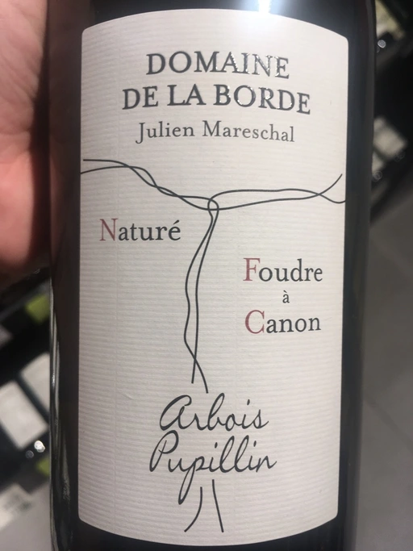
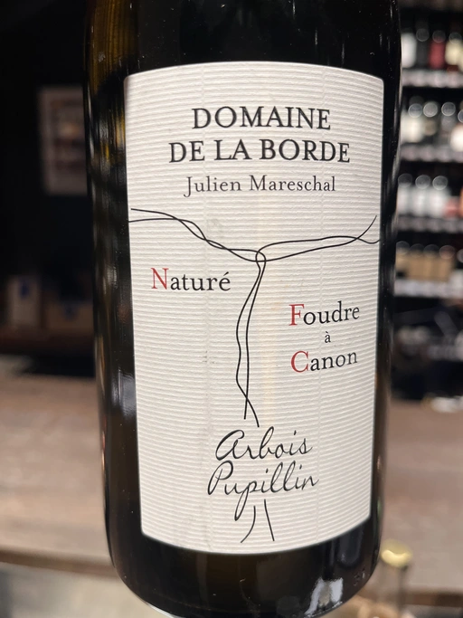
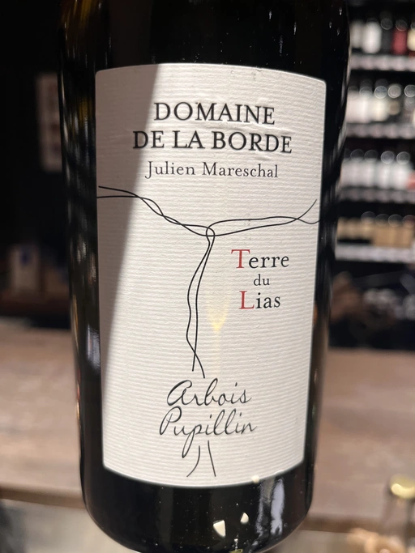
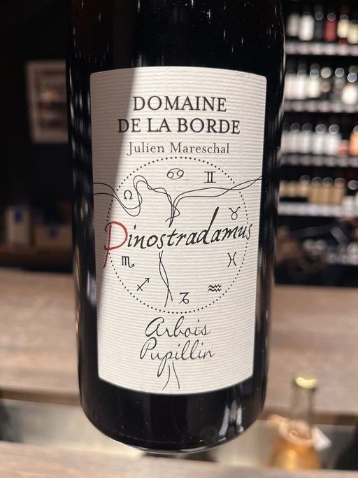
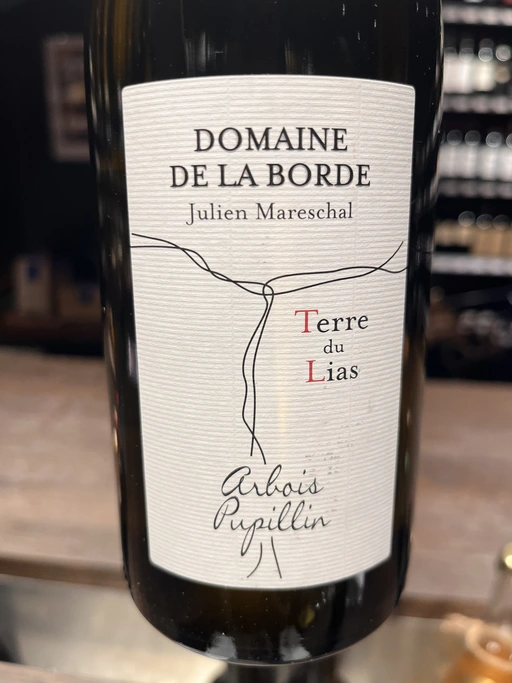
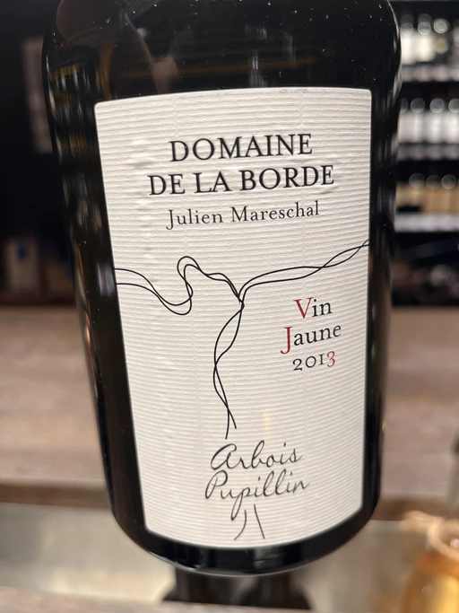

- Type
- White Still, Dry
- Producer
- Domaine de La Borde
- Vintage
- 2016
- Location
- France, Arbois AOC
- Grapes
- Savagnin
- Alcohol
- 13
- Sugar
- 1
- Price
- 779 UAH
- Cellar
- N/A
Producer
Julien Mareschal owns 5 hectares in Arbois. Around 3.5 hectares are planted with Chardonnay, Savagnin Savagnin. Trousseau, Pinot Noir and Ploussard occupy the remaining 1.5 ha. All vines are more than 30 years old.
Ratings
2020-07-30 - 8.00
Interesting and sophisticated wine. It opens up with pear, lychee, grass, nuts and delicate hint of VA, increasing its character. Very good and lifted acidity with long evolution, citrus flavours. Long finish with a touch of umami.
Related

Domaine de La Borde
Foudre à Canon - 2019

Domaine de La Borde
Terre du Lias - 2018

Domaine de La Borde
Pinot Noir Sous la Roche - 2018

Domaine de La Borde
Pinostradamus Pinot Noir - 2018

Domaine de La Borde
Terre du Lias - 2020

Domaine de La Borde
Vin Jaune - 2013

Matassa
Cuvée Alexandria - 2019